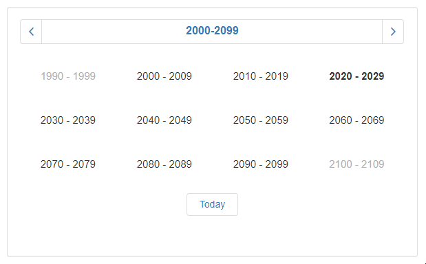
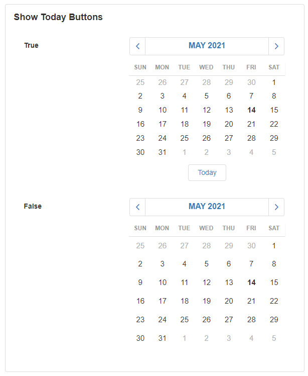
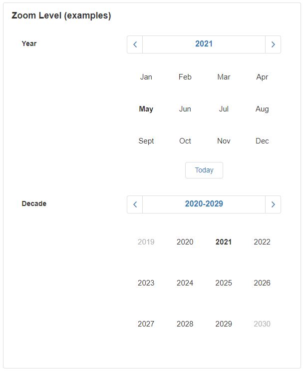
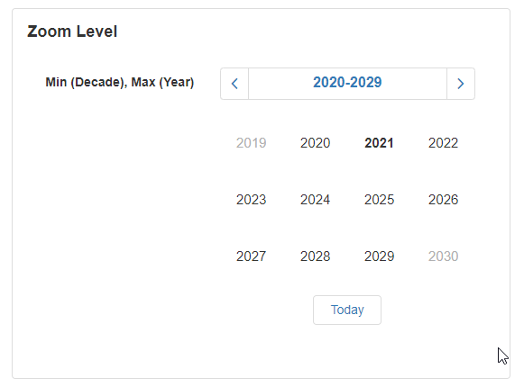
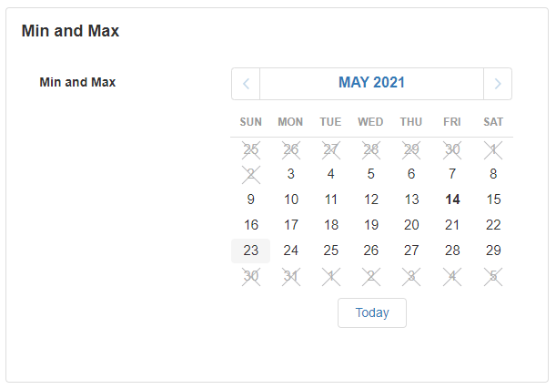
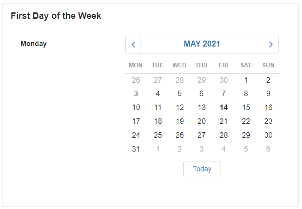

Calendar
The Calendar is a Block that displays a Calendar and allows the user to select the required date within a specified date range. This is useful to use on forms where the user needs to enter a date for a particular field. It is also useful for displaying certain important dates to the user.

Note
Some images in this document may be missing and need to be migrated from the original GitBook documentation.
Calendar Properties
Appearance
Common Properties
You can specify if the Calendar is visible, or if tooltips are enabled.
See the Common Properties article for more details on common appearance properties.
Show Today Button
This specifies if the button that takes the user back to the current date is displayed.

Zoom Levels
This specifies the time frame of selectable dates. Options include month, year, decade, and century.

Min and Max Zoom Levels
This specifies the limit on where the user can zoom in and out of the dates. For example, they can zoom until they reach the page that shows the yearly view, and can only zoom out to see decades.

Behavior
Common Properties
The read-only and disabled properties are common to most Blocks;
See the Common Properties article for more details on common behavior properties.
Min and Max
This only lets the user select dates within a limited range.

First Day of the Week
Changes the day of the week that the Calendar starts on.

Value
Common Properties
The Value property is common to most Blocks;
See the Common Properties article for more details on common value properties.
The accepted values for the Calendar include the selected date or time that the user clicks on. This can either be a date, number, or sequence of characters. The Date option will accept the date directly. The number option will accept the date using a timestamp. The string option will accept the date as a sequence of characters provided they are in the correct format:
- "yyyy-MM-dd" (for example, "2017-03-06")
- "yyyy-MM-ddTHH:mm:ss" (for example, "2017-03-27T16:54:48")
- "yyyy-MM-ddTHH:mm:ssZ" (for example, "2017-03-27T13:55:41Z")
- "yyyy-MM-ddTHH:mm:ssx" (for example, "2017-03-27T16:54:10+03")
Disabled Dates Data Source
Common Properties
If set to the Dynamic Data Source option, additional options include filtering, sorting, showing a number of results, and skipping a number of results.
See the Common Properties article for more details on common Data Source properties.
Static Items
If a Dynamic Data Source is not used, you can enter key dates to display manually under the Data section.
Dynamic Data Source
This option allows you to connect the control to a specific Data Source such as a database to pull data dynamically. This will give you additional options to sort, filter, show, or skip certain records.
Data
The data allows you to choose a date based on the connected Data Source. This can be configured when using static items for disabled dates Data Sources.
Action
Common Properties
Properties that are common to most Blocks include: Navigate To and Show Confirmation Dialog;
See the Common Properties article for more details on common action properties.
Last modified: May 29, 2025